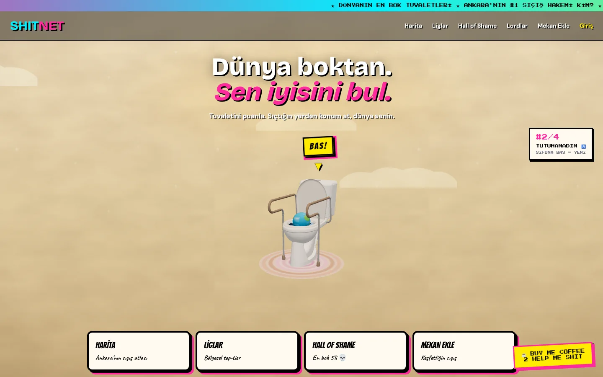

A gamified, map-based social app for rating the world's toilets. Drop a pin from wherever you are, climb the regional leagues, dodge the Hall of Shame, and become a reviewer "lord". A tongue-in-cheek riff on Google Maps — designed, built and shipped end-to-end.

it's live!shitnet takes a dumb premise completely seriously: a real, playable product with maps, live reviews, regional leagues, badges and a leaderboard of "lords". It's the full loop — discover a place, rate it, climb the ranks — wrapped in a loud, neo-brutalist identity. Frontend, maps, realtime and the whole game economy, built by one person and put online.
An interactive map of rated spots — drop a pin from wherever you are and put a place on the grid.
Every district gets its own top-tier table. Rate enough and your neighbourhood crowns a leader.
The bottom five, immortalised. The worst offenders get their own wall of infamy 💀.
A global leaderboard with badges — first rating, paparazzi, and more — for the most active reviewers.
A running feed of fresh verdicts, "live from the stall" — the timeline never stops scrolling.
Found a hidden gem? Put it on the map and hand it to the world. The atlas grows with the crowd.